HTML5 Presentation
好吧Prezi是收费的==，那就自己动手丰衣足食吧。
虽然某软的PPT已经很高大上了，但是你还是觉得它不够好了。 ——你终于发现了。
那么，欢迎拥抱HTML5。
本系列教学的终极目标是——Be a Professional Web Developer! 好吧开玩笑的，但是如果顺便学了一些网页开发的知识岂不是更好吗(笑)。
好的，那开始了。
你要做的是一个很高大上的简报(幻灯片)。
<<<<<<< HEAD像这个，请点开看一下。
或者这样的，请再看一个例子。
=======像这个，请点开看一下吧。
或者这样的，请再看一个例子。(最好用電腦)
>>>>>>> origin/master欢迎回来。
看完知后感觉如何呢？很酷？也想做？是的话请继续往下看。(不想看的话可以直接按Ctrl+W啦)
你有没有想过这种简报是什么黑科技呢？
好吧，不是黑科技，这是最新的网页技术。
之前你所看到的那些其实都是网页啦，只不过结和新的HTML5和还算是强大的CSS3以及JavaScript就可以打造出几乎任何你想要的效果啦。(前面那几个英文不明月白没有关系，以后就会懂啦)
而且在网页中能实现的特效可是比某软的某工具多多了~
所以如果你也想制作这样的简(网)报(页)，先来学一些HTML基础吧。
翻译成中文大概是「超文本标记语言」。看不懂没关系，请看下面：
Markup Languge，标记语言，就是用来做标记的语言。
长这个样子：
<html>
<body>
<h1>你好</h1>
<p>你好我好大家好</p>
<img src="hello.jpg">
</body>
</html>
这段代码的效果是这样的：
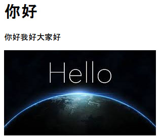所以呢，<h1> </h1>标记的是标题-等级一，也就是最大的标题，当然还有h2, h3一直到h6依次变小。(顺便一提：一般也就用三个)
<p></p>标记的是段落，即正文。
<img src="hello.jpg">这就是图片啦。
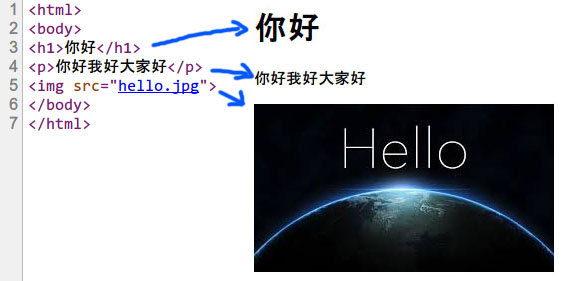然后你的浏览器根据这些代码就显示出了这样的网页。
接下来要介绍HTML中的HT了。
超Hyper：「超」就是超啦，很厉害的感觉。
文本Text：文本就是字喽，纯文本就是只有文字喽，没有其它什么图片声音格式等等。
Bingo，所以HyperText 超文本就是很厉害的文本，它不仅有文字还有图片声音格式等等。
<<<<<<< HEAD才怪咧！超文本再厉害它也是文本啊。你问它为什么是「超」文本？因为它有超链接啊。就是你在网上经常见到的东西，一般长这样。因为超链接是超链接所以靠着它你就可以傲游网路了。
所以，超文本是网页的基本元素。
=======才怪咧！超文本再厉害它也是文本啊。你问它为什么是「超」文本？因为它有超链接啊。就是你在网上经常见到的东西，一般长这样。因为超链接是「超」链接所以靠着它你就可以傲游网路了。
所以，超文(鏈)本(接)是网页的基本元素。
>>>>>>> origin/master简单说HTML就是用来标记网页的结构的。
(这个「你好」是大标题，「你好我好大家好」是一个段落，blah, blah...)
你看这样多丑，可不可以加工一下，比如某老师说要用「宋体四号字」……
当然可以，只不过在网页中我们不用选中再选择样式。我们有还算是强大的CSS——
CSS 的全名为 Cascading Style Sheets(不是Counter-Strike: Source)，不明白全名没关系啦，记住大家都叫它CSS就好了。
HTML是用来标记页面上的结构的语言(这个「你好」是大标题，「你好我好大家好」是一个段落，blah, blah...)，CSS就是设定这些结构的样式的语言了(这个大标题要用黑体三号加粗，段落们呢，宋体小四好了，然后这要一个……blah, blah...)。
所以HTML和CSS是一对形影不离的好基友。
先简单看一下CSS是怎样规定网页样式的吧。
它是由一条一条的「规则」(Rule) 所组成的。
好，我们来仔细看一条Rule：
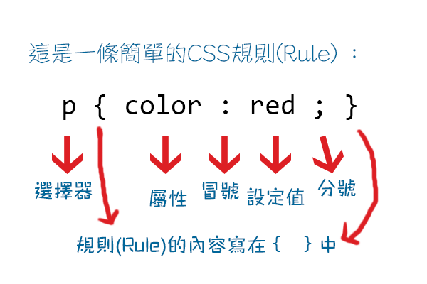选择器(Selector) 就是用来选择要把这条规则(样式)应用到哪一个HTML元素(element)上，对了，像p(段落)、h1(标题)等这些叫做html中的元素。
然后在{}中写上规则的内容。
属性就是你要设定的东西。后面是设定的具体内容。比如这里的，color: red; 就是把文本颜色设定成红色。(嗯，文本颜色是color而不是text-color……)
不要忘了在属性后加冒号(:)。一个规则中可以有很多条设定，每一个后面记得要用分号(;)结尾。
所以你就可以规定网页上各个元素的样式了~
当然更详细的会在后面提到的。
当然是！但前面的知识是在打基础啊打基础~
好了下面就来说一说高大上的幻灯片是怎么一回事吧。
高大上的幻灯片就是网页。(嗯…等、这你早就说过了喂！)
好吧，但它不单单是网页，它是……嗯，有黑科技的网页。不，应该叫做应用(App)了，于是一个高大上的名词就此诞生了——WebApp！
这个WebApp呢，顾名思义就是基于网页的App啦，不用安装就能用，可以打游戏，可以放幻灯片，还可以做出一个桌面来嘞~
好吧感觉越扯越远了==。。。
所以要实现App的功能，除了标记语言和样式定义语言是不够的，要有真正的程序语言啦~
这就是传说中的编程了？听起来好像会很难……
不不不，不会很难(虽然编程确实不太简单)，但你不会涉及到所以……嗯，有别人写好的，直接用就好了~(免费哒~)
不说了，下面请出第一个HTML Presentation框架——reveal.js! (鼓掌~)
来，打开看看
好吧其实这就是一开始的那第一个……(被你发现了。。。)
让我们从较传统式的开始吧。
这就是传统风格的幻灯放映方式了。一页一页，嗯这没有什么不好的(第二个就会介绍那个炫酷的了，莫急~)，其实很多场合这种方式还是满实用的。
来来来，先把这个下载下来。
现在你有了reveal.js的源代码。(当然是你解压缩之后~)
(源代码是什么？这个我先想想下次再回答)
打开reveal.js-3.2.0文件夹，你应该能看到类似下面这样的这些文件：
如果你用Windows，大概是这个样子
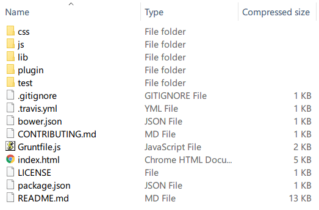
如果你用Mac，大概是这个样子
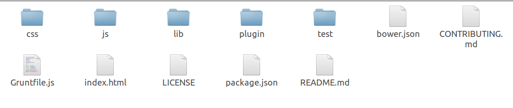
以后所有的操作截图都是基于Windows 10的了，不过放心，其它系统也都大概类似的~
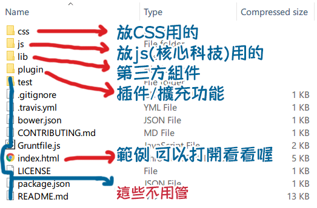
对了，在开始之前先说一下你都需要准备什么吧：
一个你喜欢的HTML幻灯框架(比如说这个reveal.js)
一个你喜欢的文本编辑器(这个一会再说)
一个你喜欢的现代浏览器(比如Chrome, Firefox等)
OK, 没有意外你已经可以开始了。
首先，在reveal.js文件夹下新建一个文本文档(比如，命名为「我的第一个」)，打开，把下面的代码复制进去，保存成utf-8编码，然后把名字改成「我的第一个.html」，或者你自己起的名字.html，嗯，*.txt的文件是文本文档，html即网页文件的后缀是.html。
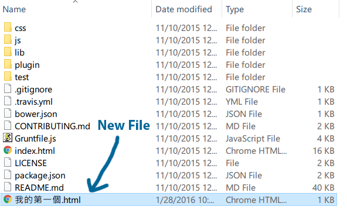(utf-8是什么？这要怎么保存成？
utf-8是unicode的一种，简单说就是同时有很多语言，如中、英，的时候，不会乱码。
在Windows的记事本中，找「文件」，然后「另存为」，在格式中下拉选「所有類型」(*.*)，这时 你就可以直接写上名字.html了，在编码中下拉选「utf-8」。 )
(如果你在Windows下看不到文件后缀，请到「文件夹选项」-「查看」中找到隐藏已知文件扩展名，把 ✓ (勾)去掉)。
<html>
<head>
<link rel="stylesheet" href="css/reveal.css">
<link rel="stylesheet" href="css/theme/white.css">
</head>
<body>
<div class="reveal">
<div class="slides">
<section>我的第一个HTML幻灯片</section>
<section>这是第二页</section>
<section>
<h2>这是是最后一页</h2>
<p>谢谢</p>
</section>
</div>
</div>
<script src="js/reveal.js"></script>
<script>
Reveal.initialize();
</script>
</body>
</html>
OK，现在你就有了「我的第一个.html」，直接打开，如果你的html关联着上面说的那些浏览器之一。如果你的默认浏览器比较旧或着不支援HTML5，你可以打开，比如说Chrome然后按下Ctrl+O，打开你的html文件，或者直接拖动至浏览器窗口就打开了~
你应该能看到你的幻灯片，按下右方向键或右下角的按钮，好好欣赏一下吧。
你看到的应该差不多是这样的：
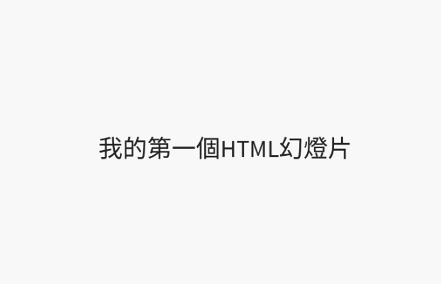
好的我们现在要从最基本的标签(tag)说起了，直到你能明白「我的第一个.html」到底是如何运作的。
(你刚才提到了标签(tag)对吗，那是什么？)
tag就是<h1></h1><html></html>这些啦。
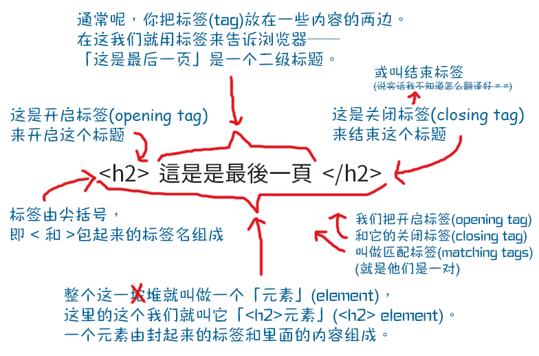
所以你用一对一对的标签裹上你的内容来告诉浏览器你的页面结构是什么样的。
别忘了：元素(element) = 开启标签(opening tag) + 内容 + 关闭标签(closing tag)
对了，这有几个标签你需要认识一下：
<html>标签：你可能已经发现了，网页中所有的元素都是在<html></html>中的。
所以一个网页最两端的标签一定是(开始一个网页)和</html>(结束一个网页)。
然后就是头和身体了。 (蛤？头和身体？！)
嗯对，这里说的是html中的结构，或者元素——头(head)和身体(body)：
<head>元素是在<html>中排在最前面的部分。
在<head></head>放一些乱七八糟很重要的东西：
比如<title></title>中写的是你这个网页的标题。
这个没有也可以啦~(你看上面那个就没有)
虽然是允许的但是总是起个名字(标题)对谁都没有坏处不是吗。
在这个的
元素中只有下面这些元素： <link rel="stylesheet" href="css/reveal.css">
<link rel="stylesheet" href="css/theme/white.css">
这是<link>元素……喂！等、你不是说元素都要有开始和结束的标签吗！这里怎么只有一个！而且里面这些乱七八糟的东西是什么！
呃……别急，让我慢慢解释一下……
有句话怎么说，「凡事都有例外」不是吗，所以html中也是如此喽~
所以总有那么一些特立独行的标签想要过单身生活有一些标签是不需要内容的，那么它们也就不需要closing tag了。
比如说这个吧，它做的工作只是给这个网页链接一些外部的东西。比如这有份样式表(CSS)，但没写到这个页面中，那个谁，<link>，你给做个链接，告诉浏览器我的CSS在那个哪呢……
所以一个标签不仅是只有名字的，(除了姓名还要有姓别、民族……)他还可以有各种各样的「属性 」(attribute)
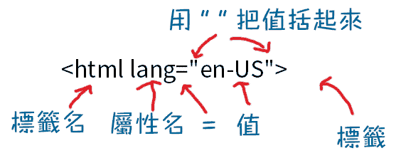
这里给加了一个lang(语言)的属性(attribute)，告诉浏览器这个网页是英文(en-US)的
一个标签可以有多个属性(attribute)，比如这样：
<img src="test.jpg" width="100" height="100">
(可以猜一下这个tag和这些属性的作用喔。猜对有奖~)
<link rel="stylesheet" href="css/reveal.css">
<link rel="stylesheet" href="css/theme/white.css">
rel=relationship，定义一下链接的文档和当前文档的关系，这里的rel="stylesheet"，就是告诉浏览器我链接的是一个样式表(stylesheet, 嗯没错CSS一般还被叫做stylesheet即样式表)啊。
href="css/reveal.css"，href就是链接的意恩，"css/reveal.css"是它的位址。(喂，浏览器，我要链接的文档是css下的reveal.css)
所以<link>不需要什么内容。于是它被大家叫做空元素(void element)(void是什么都没有的意恩)
所以<link>在这给你的网页(幻灯片)指定了两个样式表。(这个以后再详谈)
这就是HTML的身体了。
网页中你想要呈现出来的内容都在<body></body>中。啊，对了，脑袋(<head>元素)中的乱七八糟重要的东西都是有关这个网页的需要让浏览器知道的信息。这些内容都是不会显示在网页中的。所以你想呈现出来的内容都要写在
OK, <body>中的第一个元素，<div>，div应该就是division的缩写，所以这就是「分区」之类的。
一个<div>元素就是一个独立的区块。所以用
所以你看到这个<div>元素中有一个class属性。
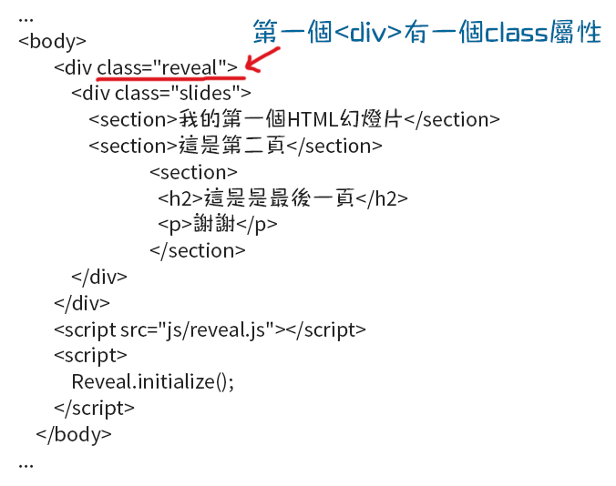
class="reveal"
class这个属性就是定义这个元素是哪个班的~
比如这个div是reveal班的，那个什么元素是13级2班的…
好吧，其实class在英文中还有集团、阶层等的意思，就是性质或什么都相同的一坨堆东西、人等所在的那个……对了好像有个词叫「类」。
class 属性规定元素的类名（classname）。
对元素分好了类(class)，就可以方便控制了啊哈哈。比如在CSS中把这一类闹成红色，给那一类加上灯光、音效……
所以最外面的<div class="reveal">是整个reveal.js(就是你现在用的html幻灯片序)的大框架，这个里面的<div class="slides">是幻灯片所在的地方(分区)啦。
每一个<section>元素便是一张(页)幻灯了。
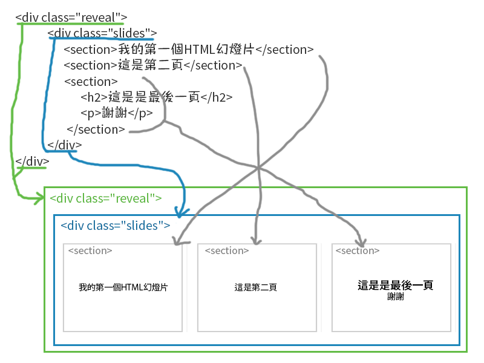
你问为什么要用这样的结构？
因为这个应用就是这样设计的啊:P
所以这个幻灯片应用的标记结构就是图中所示的这样啦~
<section>元素，也就是你放幻灯片内容的元素可以有无限多~
如果你在<section>元素里面再套上一坨层<section>元素呢，这些<section>元素，即这些幻灯片，就都是垂直(翻页)的了~
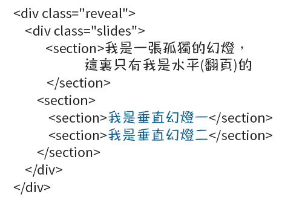
好，让我们看看下面的…… 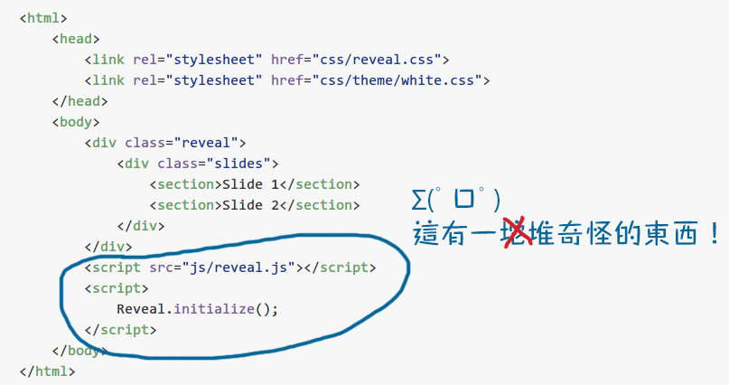
<script src="js/reveal.js"></script>
<script>
Reveal.initialize();
</script>
这个呢，就是引用上reveal.js的程式脚本，然后在开启它的意思了。
(黑科技开启！地球毁灭初始化中……)
所以这是必不可少的部分。没有它幻灯就放不出来了。
(呼，总算把第一个坑塡的差不多了，下后面会介绍reveal的一些其它功能，修改主题及自订样式等，还有一些问答……)